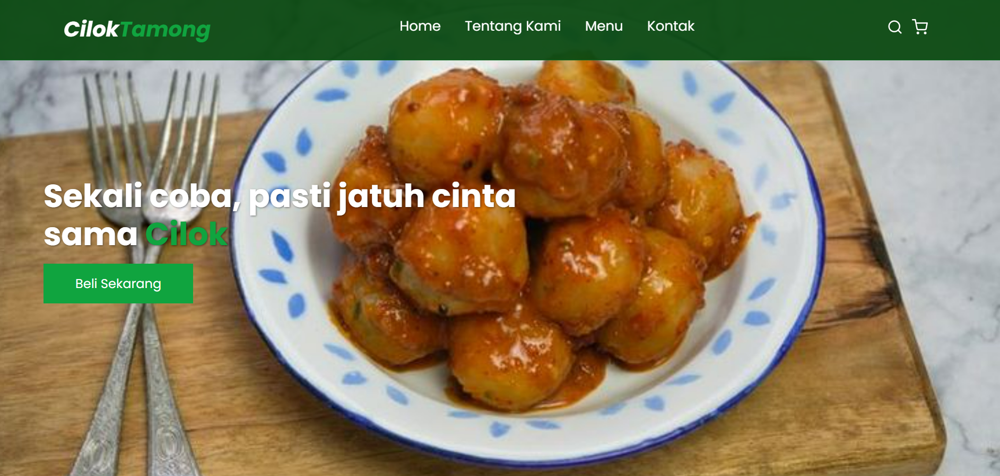
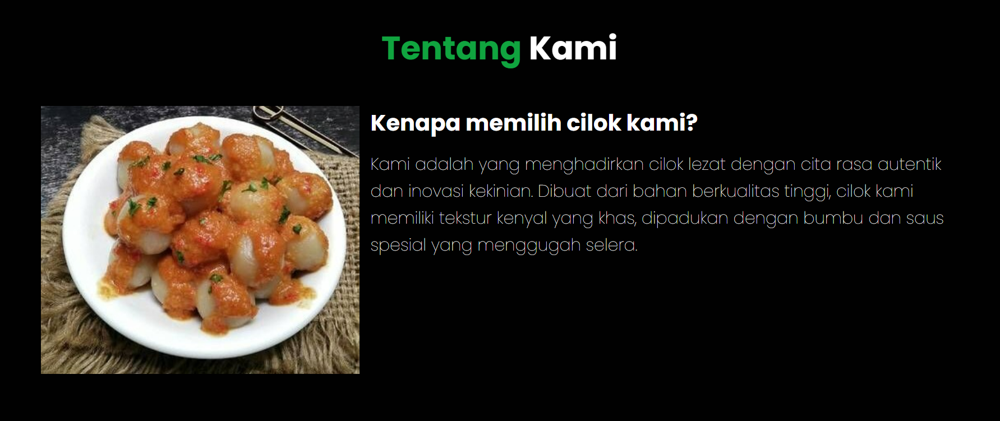

Website media promosi digital yang dikembangkan untuk membantu UMKM Cilok Tamong memperkenalkan produk, menu, informasi usaha, dan kontak kepada masyarakat secara lebih mudah melalui media digital.


Website UMKM Cilok Tamong merupakan website yang dikembangkan sebagai media promosi digital untuk membantu memperkenalkan usaha Cilok Tamong kepada masyarakat.
Website ini dibuat dalam kegiatan Kuliah Kerja Nyata (KKN) dengan tujuan membantu UMKM memiliki media informasi digital yang dapat digunakan untuk memperkenalkan produk dan usaha secara lebih luas.
Website ini bertujuan untuk membantu UMKM Cilok Tamong dalam memperkenalkan produk, menyediakan informasi menu, menampilkan profil usaha, serta memberikan informasi kontak yang dapat digunakan oleh pelanggan.
Website dikembangkan menggunakan HTML sebagai struktur halaman, CSS untuk desain dan tampilan, serta JavaScript untuk mendukung interaksi pada website. Website juga dirancang menggunakan konsep responsive web agar dapat digunakan pada berbagai perangkat.